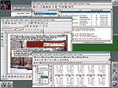

KDE 2.2.2 -- регалии и реалии
Регалии
Начнем мы издалека -- с вещей, которые на самом деле никакого отношения
к программам не имеют. А именно, с титулов, наград и регалий, которых
программы (и их разработчики) удостаиваются. В мире большого коммерческого
ПО титулованность -- один из самых важных, решающих факторов всех
составляющих успеха. Не напрасно и не случайно Б. Гейтс объявил успех
Windows XP в такой дерзкой форме: "Я очень счастлив, когда вижу такой
уровень продаж, ведь отправка человека на Луну -- это ничто по сравнению с
разработкой Windows XP". Эту фразу перепечатали тысячи изданий (и даже
автор статьи не избежал подобной печальной участи), и вот уже сомнения,
возмущения и предсказания аналитиков отошли на второй план. Проект KDE --
естественно, не корпорация Microsoft и представляет совершенно иной мир,
но и в нем есть свои амбиции и титулы. Их полный перечень можно найти на
сайте http://www.kde.org/,
мы же обратим внимание на ключевую фразу, характеризующую цель проекта,
которой "открывается" его сайт, и всего одну, но весьма весомую награду.
Итак, главная цель и характеристика KDE, по словам разработчиков, гласит:
"KDE -- это мощная, с Открытыми Исходными Текстами, графическая настольная
среда для рабочей станции Unix". Ну а самая весомая награда --
"Программная инновация 1998/99 гг.", полученная проектом на выставке
CeBIT.
Такое весьма странное начало вовсе не случайно -- ничего
случайного не бывает. Раз уж KDE заявлена разработчиками как среда для
"рабочей станции Unix" и раз столь уважаемая международная выставка, как
CeBIT, удостоила проект такого титула, то руки можно считать развязанными.
Что означает -- никаких "поблажек" при эксплуатации KDE 2.2.2 и никакой
снисходительности автор проявлять не собирается, "ведь отправка человека
на Луну -- это ничто по сравнению..." (здесь читатель может продолжить
фразу сам).
Инновации и архитектура
 Полученная проектом KDE в далеком по
компьютерным меркам 1998 году награда CeBIT спонсировалась Ziff-Davis и
присуждалась "не за коммерческий успех, а за креативность в дизайне
продукта, исключительные решения специфических проблем или принципиально
новые концепции". Одновременно с проектом KDE эти награды получили
процессоры AMD семейства K6-2, видеоакселераторы NVidia Riva TNT и ATI
Rage 128 и, наконец, Novell NetWare версии 5.
Что же принципиально
инновационного было в проекте в те времена? Возможно, "привычный" дизайн,
во многом схожий с оформлением "настольных" систем. Дизайном в мире
рабочих станций Unix (вспомним цель и характеристику проекта) никто
особенно не увлекался, классическая графическая оболочка CDE им, мягко
говоря, не блещет, и симпатичный, с точки зрения не знакомого с ОС Unix
человека, экран уже привлекает внимание. Но все-таки главной инновацией
была архитектура системы, которая не столько интересна как застывшее
явление, сколько крайне симтоматична в истории своего развития.
В
одной из предыдущих статей мы уже обсуждали вопросы программной
архитектуры, в другой -- бегло обсудили проблемы middleware -- основного
связующего компонента, "клея", с помощью которого создаются большие
программные системы. И если в предыдущих публикациях звучали больше
рассуждения, то теперь настало время подкрепить их мнением практикующих
разработчиков одного из самых ярких проектов в мире freeware: "Отказом от
CORBA в пользу нашего собственного, оптимизированного под задачи
middleware, мы смогли добиться большей гибкости, более тесной интеграции и
высокой скорости как разработки, так и созданных программ". Все дело в
том, что проект KDE в свое время использовал в качестве "клея" одну из
реализаций де-факто стандартного механизма поддержки объектной архитектуры
CORBA -- Mico. Надо сказать, что выбор именно Mico был весьма удачным --
это действительно очень неплохая реализация сложнейших стандартов CORBA,
но сложность остается сложностью. И в случае с проектом KDE правило
рационального программистского мышления сработало безукоризненно: если
некоторая технология требует для своего использования N единиц времени на
освоение и K -- на использование, а ее возможности реализуются собственной
разработкой, требующей L единиц времени, и если L N + K, то собственная
реализация -- рациональнее. Именно так разработчики KDE и поступили,
создав два основных "клеящих" механизма, на которых строится вся система.
Первый механизм -- DCOP, "настольный коммуникационный протокол"
(Desktop COmmunication Protocol), очень близок к описанной в недавней
статье о программных шинах организации Software Bus (SB). Так же, как и
выдуманная абстрактная программная шина, DCOP использует в качестве
коммуникационного канала сокеты, правда, его конструкция максимально
упрощена за счет "привязанности" к технологии X Window. Активное
применение мощных сервисов последней (а X Window на деле -- куда более
серьезная система, чем просто высокоуровневый драйвер видеокарты) -- ICE
(Inter Client Communication, "межклиентское взаимодействие") -- позволило
в кратчайшие сроки и с минимальными затратами создать крохотную, буквально
в несколько сотен строк C/C++, реализацию весьма функциональной
программной шины, расширяющей абстрактную модель SB возможностью обмена
данными, преобразованными в последовательный поток (это в мире middleware
часто именуется маршаллингом или сериализацией). Слово "настольный" в
названии DCOP использовано очень метко -- "общение" с помощью SB DCOP
возможно только в пределах одного компьютера. По большому счету, это даже
не ограничение, а весьма продуманный ход, позволяющий повысить
защищенность рабочих станций, на которых выполняется KDE.
Второй
механизм также вполне "укладывается" в рамки рассмотренных прежде
абстрактных моделей. Его назначение -- расширение возможностей "общения"
между программами за жесткие границы одного компьютера, установленные
DCOP. Для решения этой задачи разработчики KDE использовали очень
симпатичные и простые идеи, положенные в основу системы поддержки
распределенных вычислений XML-RPC ("XML -- удаленный вызов процедур"). Для поддержания
XML-RPC в KDE применяется постоянно выполняемая программа-демон kxmlrpc,
реализация которой подкупает смехотворными размерами и простотой. По сути,
kxmlrpc -- это... не совсем обычный, но все же Web-сервер, транслирующий
запросы, соответствующие спецификациям протокола XML-RPC, в сообщения
программной шины DCOP. Выделение критичного к безопасности сервиса в
отдельный демон, потенциальные возможности мониторинга всех обращений "из
внешнего мира" к ресурсам компьютера и введения правил и политик
управления "общением с внешним миром" -- это не все достоинства
архитектурной идеи KDE. Простота протокола XML-RPC позволяет не просто
писать клиентское ПО на любых языках программирования, но и быстро
разрабатывать интерпретируемые "облатки" для созданных задолго до
появления KDE программ, без низкоуровневой модификации интегрируя их в
единое целое с новыми приложениями KDE. И наконец, XML-RPC позволяет
практически полностью "отрывать" пользовательский интерфейс действительно
сложных приложений (в первую очередь, научных и инженерных) от реализации
собственно семантической части программы.
Итак, с "клеем" KDE мы
почти разобрались. После тяжких битв с тысячами страниц спецификаций и
комментариев к спецификациям CORBA он не просто кажется смехотворно
простым, он действительно прост. Что означает -- прикладным программистам
не нужно тратить годы на изучение служебных сервисов, никакого отношения к
сути решаемой задачи не имеющим. Ну а там, где прикладному программисту
"легче жить", там появляются и приложения, которыми легче пользоваться.
Что, по большому счету, успех KDE подтверждает полностью.
Но
вернемся к архитектурным "инновациям" KDE. Настало время называть вещи
своими именами, и потому слово инновация в предыдущем предложении
закавычено. На самом деле, никаких особых инноваций во всем описанном выше
нет -- все это в той или иной форме было задолго до появления самой первой
версии KDE. С теми же проблемами "клея" столкнулись разработчики CDE, они
использовали практически те же архитектурные решения (программная шина на
основе механизмов ICE X Window и сокетов). XML-RPC -- красивая идея,
породившая SOAP (Simple Object Access Protocol, "простой протокол доступа
к объектам"), также не является изобретением команды KDE. И все-таки, если
уж и раздавать "призы симпатий", то идеологи и разработчики KDE
заслуживают, по мнению автора, самой важной награды: "За трезвое отношение
к технологии и здравый смысл". К сожалению, таких призов никто не
присуждает...
Оставшаяся часть "инноваций" в KDE также ничего
неожиданного не преподносит. Если "склеивание" в пределах одного
компьютера специально созданных компонентов осуществляется фактически
программной шиной, "склеивание" внешних по отношению к компьютеру
компонентов -- транслятором протокола XML-RPC в сообщения программной шины
и, наконец, "вклеивание" классических приложений -- скриптовыми
"облатками" XML-RPC, то на внутрикомпонентном уровне в KDE используется
тривиальная слоистая (layered) архитектура с объектно-ориентированными
"отклонениями". Библиотеки (слои) -- основа основ внутрикомпонентной
модели KDE, с их помощью достигается и повторное использование кода, и
стройная простая организация системы. "Каркас" (framework) библиотечной
модели именуется KParts, и все приложения KDE являются "наполнениями"
небольшого перечня "каркасных" моделей -- part ("часть", объединяющая
пользовательский интерфейс и его функциональность, способная становиться
частью другой part), plugin ("вставка", не обладающий свойством включения
в part расширитель функциональности, возможно, с пользовательским
интерфейсом), part manager ("управляющий частями", абстрактный механизм,
отвечающий за компоновку parts в единое целое, запуск и остановку их
выполнения и т. д.) и, наконец -- mainwindow ("главное окно" --
абстракция, собирающая воедино под управлением part manager множество
необходимых parts, а также plugins).
ПриложенияПо сути, KDE -- не столько множество приложений,
сколько инфраструктура для создания этих приложений. Но все же базовый
набор (который в терминах KDE именуется kdelibs и kdebase) дает одно
главное приложение, сегодня неизбежно попадающее в класс "убойных". Это,
естественно, броузер-навигатор файловой системы Konqueror. Печальная
судьба де-факто стандартного броузера Netscape, "привязанность" броузера
Opera к ОС Linux и, наконец, медленное развитие Mozilla большого
разнообразия в выборе пользователям ОС Unix не оставляют. Впрочем,
благодаря Konqueror и легким текстовым броузерам ситуацию назвать ужасной
нельзя. Konqueror неплохо справляется с отображением большинства сайтов, и
интенсивная трехнедельная эксплуатация его не вызвала у автора серьезных
нареканий. Кроме того, входящий в состав релиза 2.2.2 Konqueror весьма
быстр (визуально ощутимо быстрее предыдущих версий) и не смертельно
ресурсоемок. Но и это не главное. Главным на сегодняшний день достоинством
KDE и ее лучших приложений остается локализация. Основанная на
поддерживающем Unicode на всех уровнях проектирования тулките (библиотеке
графических примитивов пользовательского интерфейса) Qt и хорошо
поддержанная сообществами freeware-разработчиков разных стран в базовых
приложениях KDE никаких проблем с локализацией не имеет. За исключением
одной, вяло перетекающей из версии в версию, -- переключателя языка для
клавиатурного ввода. Добиться от него работоспособности принципиально
можно, но, слава Богу, Unix всегда предоставляет более радикальные способы
решения проблем. Впрочем, об этом позже.
Если вернуться к
обсуждению Konqueror, то его разработчикам можно сделать много
комплиментов. Несмотря на то что концепция Explorer-подобного файлового
менеджера далеко не всем по душе (включая и автора статьи), Konqueror
действительно хорош и в этой роли. Естественно, как и на десктопах
пользователей ОС Windows, где прочно "поселился" какой-нибудь
представитель Norton-подобной программы, для интенсивной работы с файлами
дополнить Konqueror чем-то схожим (или по вкусу -- аналогичным, например,
каким-либо "последователем" XTree) необходимо. А вот для просмотра больших
"свалок" документов, персональных сборников документации и архивов
изображений Konqueror, без сомнения, хорош. Для каждого файла типа pdf или
ps (Postscript), а также для всех файлов изображений и html он посредством
прочих компонентов KDE строит пиктограммы, отображающие реальное
содержимое файла. Процедура их построения не слишком быстрая, но, учитывая
достаточно хорошо реализованное кэширование, она не раздражает. В части же
возможностей Konqueror как броузера можно сказать одно -- броузер как
броузер, достаточно современный, естественно, со своими нюансами, но все
же -- легально бесплатный и работающий. В целом, он оставляет очень
хорошее впечатление.
Второй элемент базового набора -- "управляющий
центр KDE". И если Konqueror хочется хвалить, то эта подсистема вызывает
больше вопросов, чем хвалебных эпитетов. К сожалению, многое, что касается
пользовательского интерфейса этого весьма критичного элемента, просто не
продумано или явно делалось впопыхах. В нем слабо реализовано управление
запуском компонентов KDE (точнее -- никак), сравнительно небольшой
перечень подменю настроек образует плохо сгруппированное месиво, в котором
сугубо машинно-зависимые подсистемы могут соседствовать со свойственными
только KDE настройками. Впрочем, это можно считать болезнью роста, и раз
уж разработчики KDE поставили перед собой цель создать действительно
пользовательскую среду для рабочих станций Unix, от "привязанности" к
конкретному представителю многочисленного семейства Unix-клонов им
неизбежно придется отказаться, по крайней мере, в "управляющем центре
KDE".
Остальная часть базового набора приложений, по большому
счету, особой ценности не имеет. У всех них есть аналоги, отличающиеся или
большей функциональностью, или меньшей ресурсоемкостью, или еще
какими-нибудь достоинствами. Оконный менеджер kwm, панель kpanel, масса
всевозможных меню, пиктограммы, ассоциированные с файлами данных или
приложений на Рабочем столе, -- все это, конечно, хорошо, но совершенно не
обязательно. KDE весьма некритична к собственному окружению, и если оно
раздражает либо назойливым изобилием всех этих "красивостей", либо весьма
высокой ресурсоемкостью, без ущерба для работоспособности и удобства от
множества этих "погремушек" можно отказаться. Приложения KDE прекрасно
"живут" под управлением ряда оконных менеджеров -- BlackBox, IceWM,
WindowMaker и других. В частности, WindowMaker позволяет "за бесплатно"
радикально решить проблему переключателя языка благодаря прекрасно
работающей собственной реализации этой важной
функции.
Дополнительный набор приложений KDE весьма обширен. Очень
хорош почтовый клиент KMail -- весьма продуманная, удобная и приятная в
использовании программа. Симпатии вызывает и ее "партнерша" -- программа
чтения новостей KNode. В принципе, комбинацию Konqueror + KMail + KNode
можно считать главным "убойным" набором приложений KDE, и если бы кроме
них в KDE ничего не было, проект бы все равно оставался исключительно
удачным.
Качество утилитарных приложений в KDE достаточно высокое,
но многие из них проигрывают своим конкурентам из мира классических
Unix-задач. Так, программа просмотра файлов ps и pdf -- Kghostview,
несмотря на внешнюю симпатичность, далеко не так "всеядна", как ее древняя
и "уродливая" предшественница -- gv (многие pdf-файлы, созданные в
распространенной системе подготовки документов FrameMaker, можно
просмотреть только с помощью gv).
Всяческие игры и прочие
"погремушки" из дистрибутива KDE автор не устанавливал, впрочем,
потенциальные пользователи такой системы заинтересованы на самом деле не в
них. А, естественно, в реальных возможностях KOffice -- офисного набора
приложений, в состав которого входят текстовый процессор, электронная
таблица, графические редакторы и полукоммерческий аналог редактора
диаграмм Visio -- Kivio. Увы. Сегодняшний KOffice весьма далек от
пригодного к реальному использованию состояния. Практически все программы
из его состава ведут себя крайне ненадежно, и после недельного наблюдения
за их "падениями" в результате самых невинных операций автор отчаялся
добиться чего-либо удобоваримого от KOffice. Нестабильность работы пакета
удивительна -- крохотный eps-файл может быть прекрасно импортирован в
KWord, вставлен в текст, но при попытке открыть этот же файл векторным
графическим редактором Kontour (для которого векторный же eps -- формат
"полуродной") Kontour успешно "падает". То же самое касается и попыток
сохранения невинно форматированного текста в rtf-формат из KWord -- оно
удается через раз. И т. д. и т. п. Возможно, нелокализованная установка
KOffice работает намного устойчивей, но для реальной работы с русским и
украинским языком пакет еще крайне "сырой".
Инсталляция и надежностьВ соответствии с выдуманными для самого
себя условностями автор устанавливал KDE 2.2.2 исключительно из исходных
текстов, а в соответствии с заявленным разработчиками KDE "тотальным
характером" системы -- на два компьютера под управлением ОС FreeBSD 4.4.
Процесс установки базовой системы можно считать удовлетворительным из-за
"втянутого" в него сильно зависимого от ОС Linux единственного совершенно
некритичного компонента. С подобной мелкой неприятностью неизбежно
столкнутся и пользователи прочих (не Linux) Unix-совместимых ОС. В ходе
инсталляции никакие "трюки" (подобные ставшему модным фокусу с
динамическими библиотеками, именуемому objperlink) умышленно не
применялись.
После установки система была подвергнута сравнительной
проверке на "утечку памяти" -- были запущены несколько приложений, и
компьютер оставался включенным неделю. Для сравнения, тест на "утечку
памяти" проводился без KDE -- только с каноническими (но весьма
ресурсоемкими) Unix-приложениями. Тест KDE, увы, не прошла, "выев" за
неделю "летаргического сна" море памяти (такой же тест, но с запущенными
задачами -- представителями "Unix-классики", Motif- и Tcl/Tk-приложениями,
утечек памяти не выявил).
В ходе неинтенсивной эксплуатации
обнаружились и "болячки" броузера Konqueror -- "падения" в совершенно
непредсказуемых ситуациях (в первую очередь, при открытии больших
html-страниц практически без графики и без java-скриптов) с интенсивностью
2--5 раз в день и до непригодности ненадежное поведение большинства
элементов KOffice.
Бегло брошенный взгляд "внутрь" KDE, главным
образом в исходные тексты реализации ключевых сервисов и протоколов, также
не сильно порадовал. Знакомые каждому программисту C/C++ подозрительные
размещения групп объектов переменного размера в буфере фиксированного
размера (о, эти предположения о том, что все должно быть всегда так, как
хочется программисту) здесь встречаются...
Не подводя итоговПроект KDE -- без сомнения, умный и нужный
проект. Базовые, "убойные" приложения системы хороши, архитектурные идеи
-- также хороши. Остается надеяться, что проявленный в этом проекте
здравый смысл и трезвый взгляд на технологии сохранится и в дальнейшем --
тогда KDE действительно станет Очень Хорошей и Нужной Системой.
Андрей
Зубинский
http://www.itc.ua/
|